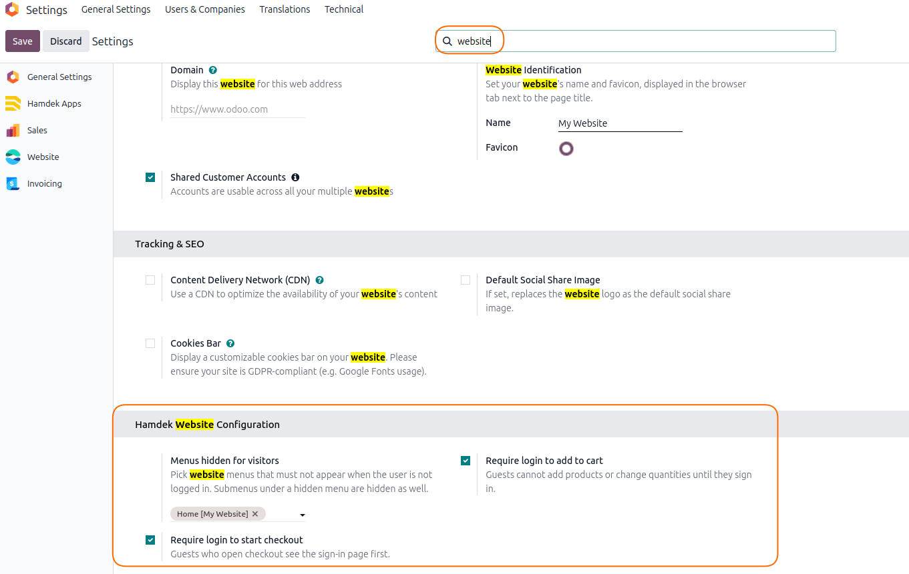

Screenshots
Configuration in Settings, cart notification when add-to-cart is restricted, checkout notification after redirect to cart, and menus hidden for visitors.
1
Website configuration
Hamdek Website Configuration on the Website settings form: login gate, cart/checkout toggles, and menus hidden for visitors.

2
Add to cart (guest)
When “Require login to add to cart” is enabled, guests see the same cart-style notification instead of updating the cart.

3
Checkout (guest)
When “Require login to start checkout” is enabled, opening checkout redirects to the cart and shows the checkout reminder notification.

4
Menus for visitors
Menus selected under “Menus hidden for visitors” disappear from the header for logged-out users.